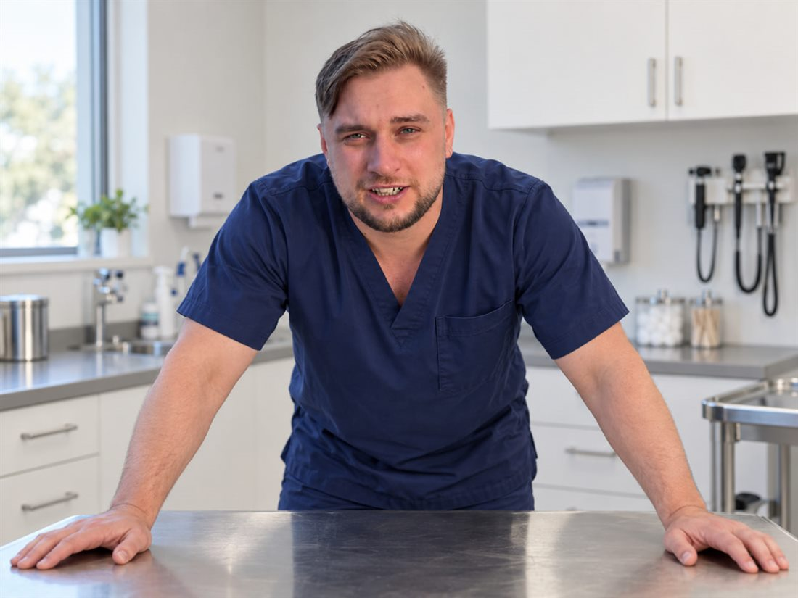

Рентген до / после
фото
фото
- Пациент
- кличка, вид, возраст, вес
- С чем пришли
- жалобы, диагноз
- Что сделали
- операция
- Результат
- через сколько дней ходит, ест, выписан
Оперирую кошек и собак: брюшная полость, опухоли, мочевыводящие пути, переломы, кесарево сечение. Плановые и экстренные операции. По приглашению работаю в клиниках Москвы и области.

Расскажите, что случилось. Я скажу, можно ли оперировать сейчас, куда ехать и что взять с собой.
+7 (___) ___-__-__Экстренные звонки: часы
Здесь самые частые операции. Полный прайс — больше 150 позиций, он на отдельной странице.
Инородные тела, непроходимость, заворот желудка, опухоли селезёнки и печени.
Удаляю опухоли кожи, молочной железы, ротовой полости, надпочечника. Материал отправляем на гистологию.
Камни мочевого пузыря, закупорка уретры у котов, удаление почки.
Остеосинтез пластиной и аппаратом внешней фиксации, вывих бедра, ампутация.
Кесарево сечение, воспаление матки, промежностная грыжа у кобелей.
Укусы, рваные раны, абсцессы, закрытие дефектов кожи после удаления опухолей.
Смету называю после осмотра, до операции. Если во время операции план меняется, сначала связываюсь с владельцем.
Степень 1–5 по риску. При стерилизации — 3 400 ₽
По показаниям, по прайсу клиники
без обследования и стационара
Осматриваю, смотрю анализы и снимки, которые уже есть. Объясняю, нужна ли операция.
Анализ крови, УЗИ, рентген — только то, что влияет на решение и на наркоз.
Наркоз подбирает анестезиолог. После операции звоню владельцу.
Пациент остаётся под наблюдением, пока это нужно. Домой — с письменными рекомендациями.
Осмотр, снятие швов, при необходимости — повторные снимки.
Пришлите документы в мессенджер. Посмотрю и отвечу, нужна ли операция, какая и сколько примерно она будет стоить. Окончательное решение — только после осмотра.
Что прислать
Публикуются с согласия владельцев. Снимки без крови и открытых тканей.

2–3 предложения от первого лица: почему хирургия, какие операции любит и делает чаще всего, как общается с владельцами.
Приезжаю в клиники Москвы и Московской области на плановые и сложные операции, когда у вас нет своего хирурга нужного профиля.
Здесь будут ссылки на настоящие отзывы. Придуманные отзывы на сайт не ставим.
рейтинг, число отзывов, ссылка
рейтинг, число отзывов, ссылка
Клиника название. Ориентир, вход, парковка
Открыть в Яндекс Картах